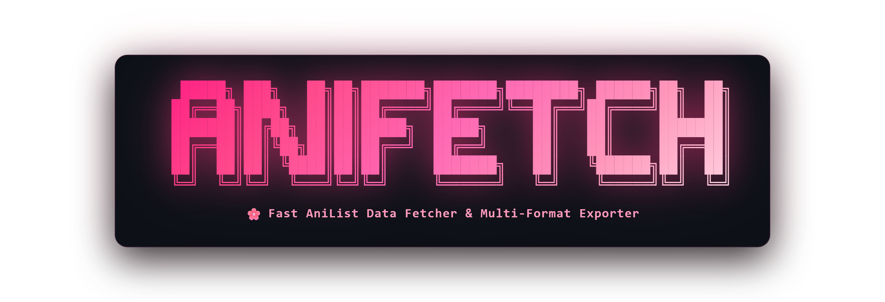

Fast AniList data extractor and multi-format exporter into JSON, CSV (Excel/Sheets), TXT, and Markdown.
Why anifetch?
Engineered with zero external runtime dependencies, blazing performance, and complete data accuracy.
Instant Zero-Install Execution
Run immediately on any terminal with npx @l1e/anifetch <username> without needing prior installation.
Multi-Format Exporters
Export seamlessly to JSON, CSV spreadsheets (ready for Microsoft Excel & Google Sheets), TXT reports, and GitHub Markdown.
Deep Statistical Analytics
Calculates mean, median, standard deviation, community divergence, score tiers, and studio/genre engagement metrics.
Spreadsheet Injection Security
Built-in formula sanitization prevents CSV formula injection attacks from rogue anime titles or user notes.
Interactive Navigation
Interactive prompt mode with seamless ESC step-back navigation and intelligent command detection.
100% Private & Safe
Zero telemetry, zero bloat, and zero hardcoded secrets. All processing happens 100% locally on your machine.
Supported Output Formats
Choose your desired output or export all 7 files simultaneously.
| Format | CLI Switch | Generated Files | Description |
|---|---|---|---|
| JSON | --json |
<user>_anime_list.json<user>_deep_analysis.json |
Complete structured dataset with all raw ratings, metadata, studios, and analytics metrics. |
| CSV | --csv |
<user>_anime_list.csv<user>_genre_breakdown.csv<user>_studio_breakdown.csv |
Clean spreadsheet format for Microsoft Excel, Numbers, and Google Sheets. |
| TXT | --txt |
<user>_summary.txt |
Human-readable ASCII overview with consumption stats, rating tiers, and formatted list table. |
| Markdown | --md |
<user>_analysis_report.md |
GitHub-flavored Markdown report complete with links, tables, and hidden gem divergences. |
| ALL | -f all |
All 7 files | Exports all formats simultaneously in a single command. |
CLI Commands Cheat Sheet
Quick copy-paste reference for all CLI switches, filters, formats, and advanced flags.
npx @l1e/anifetch <username>
Run immediately via npx without local installation
npm install -g @l1e/anifetch
Install globally to run 'anifetch <username>' from anywhere
anifetch
Launch interactive prompt wizard with ESC back-navigation
anifetch <username>
Default full fetch and structured JSON export
anifetch fetch <username>
Explicit fetch subcommand
anifetch --demo
Test extraction with sample offline profile (no internet required)
anifetch <username> -f all
Export to all 4 formats (JSON, CSV, TXT, MD) simultaneously
anifetch <username> --all --csv
Export entire collection to CSV spreadsheet (Excel / Sheets)
anifetch <username> --json
Export profile list and deep analytics to JSON files
anifetch <username> --dropped --txt
Export dropped anime to a formatted plain-text summary
anifetch <username> --completed --md
Export completed anime to a rich GitHub Markdown report
anifetch <username> -f "json csv md"
Select custom combination of formats
anifetch <username> -o ./my-anime-data
Specify custom output destination folder
anifetch <username> --no-export
Fetch and analyze profile without saving files to disk
anifetch <username> --completed
Filter by completed status only
anifetch <username> --watching
Filter by currently watching status
anifetch <username> --dropped
Filter by dropped status
anifetch <username> --paused
Filter by paused status
anifetch <username> --planning
Filter by planning / watchlist status
anifetch <username> -s "completed,watching"
Filter by multiple comma-separated statuses
anifetch <username> --min-score 85
Filter by rating on 100-point scale (85+)
anifetch <username> --min-score 8.5
Filter by rating on 10-point scale (8.5+)
anifetch <username> --genre "Sci-Fi"
Filter anime by specific genre name
anifetch <username> --sort score --order desc
Sort collection by highest personal score
anifetch <username> --sort title --order asc
Sort alphabetically from A to Z
anifetch <username> --sort episodes
Sort by total episode count
anifetch <username> --json-stdout | jq .
Stream pure JSON to stdout (disables banner and logs)
anifetch <username> -q
Quiet mode (suppress terminal banner and status messages)
anifetch --help
Display complete CLI guide, options, and flag aliases
anifetch --version
Display installed version number